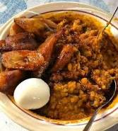

gob3

Description
Gob3 is a popular Ghanaian dish made from beans cooked together with palm nut oil,
giving it a distinctive reddish-brown color. It's often served with a variety of sides like fried plantains,
boiled eggs, salad, and a spicy pepper sauce. It's a flavorful and filling meal enjoyed across Ghana.
Ingredients
Steps to Prepare gob3
- First Bring water to a boil over intense heat
- Add beans and leave to boil until partially soft
- Add palm oil and stir boil for sometime!, voila you're done